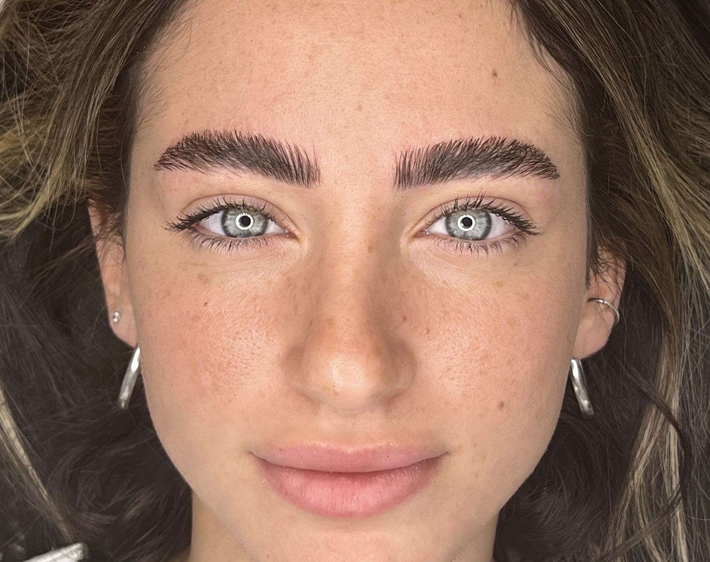
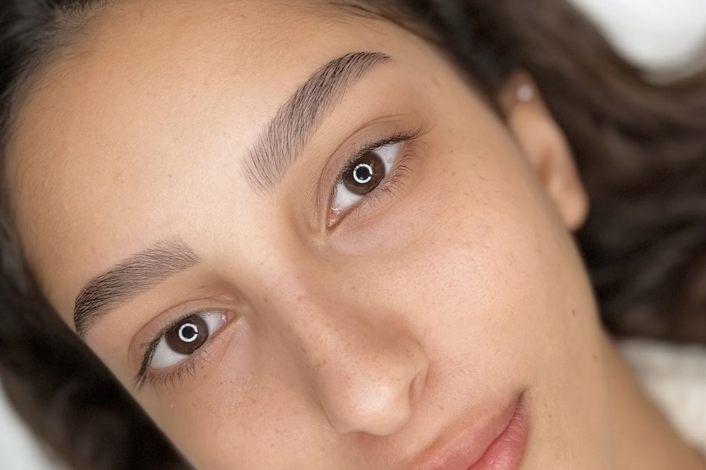
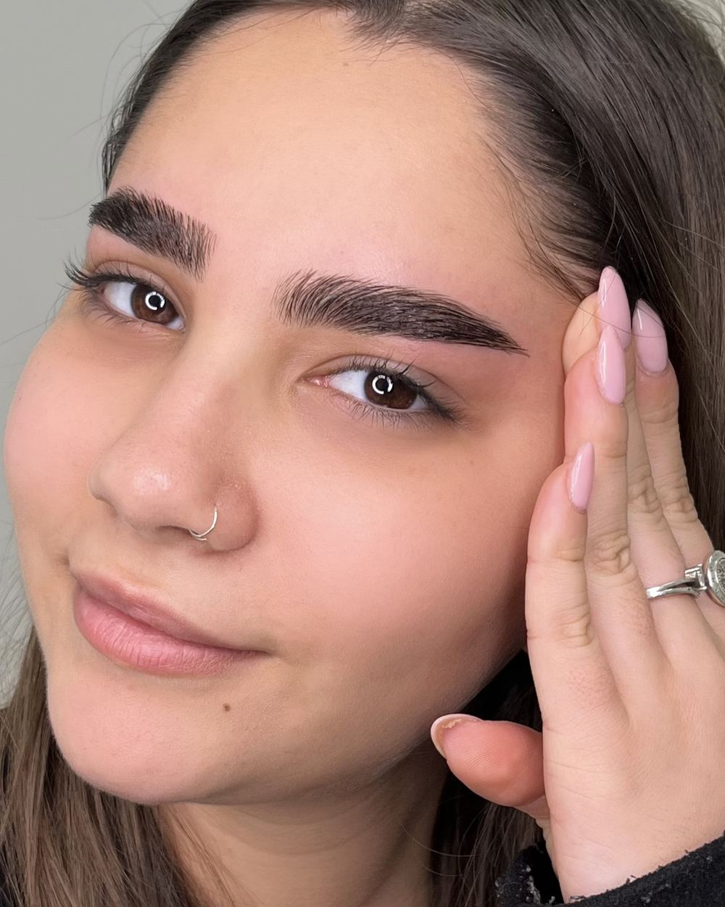
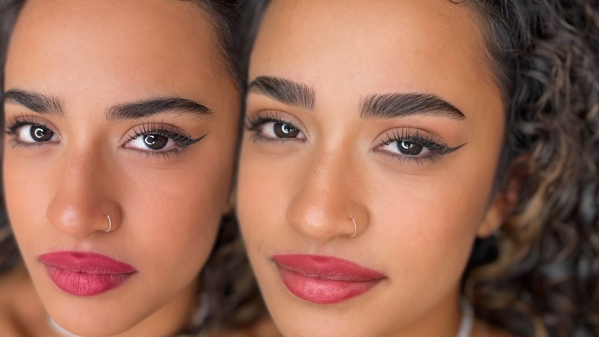
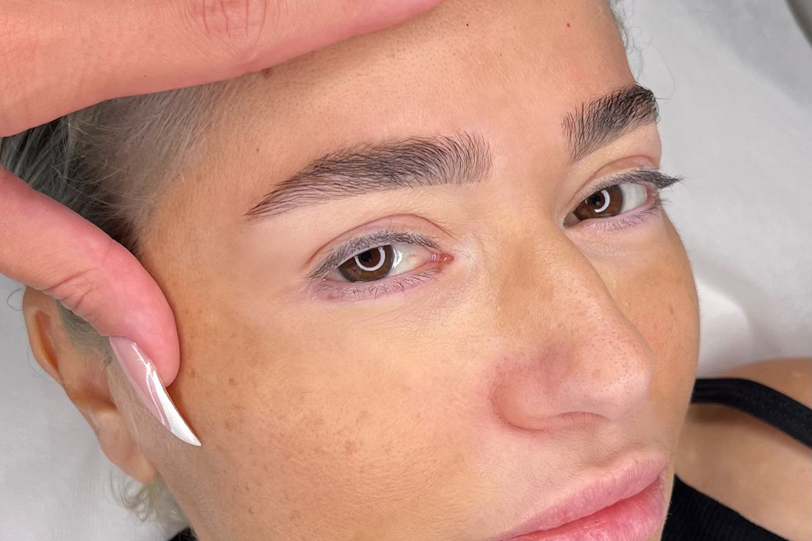
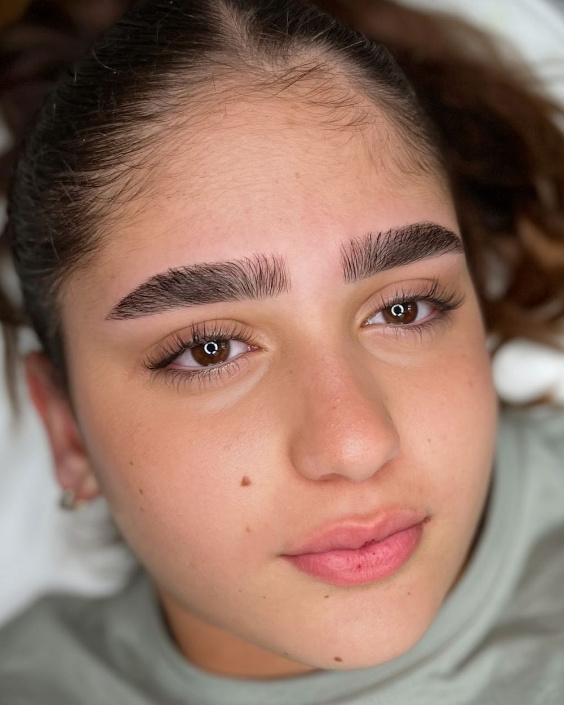
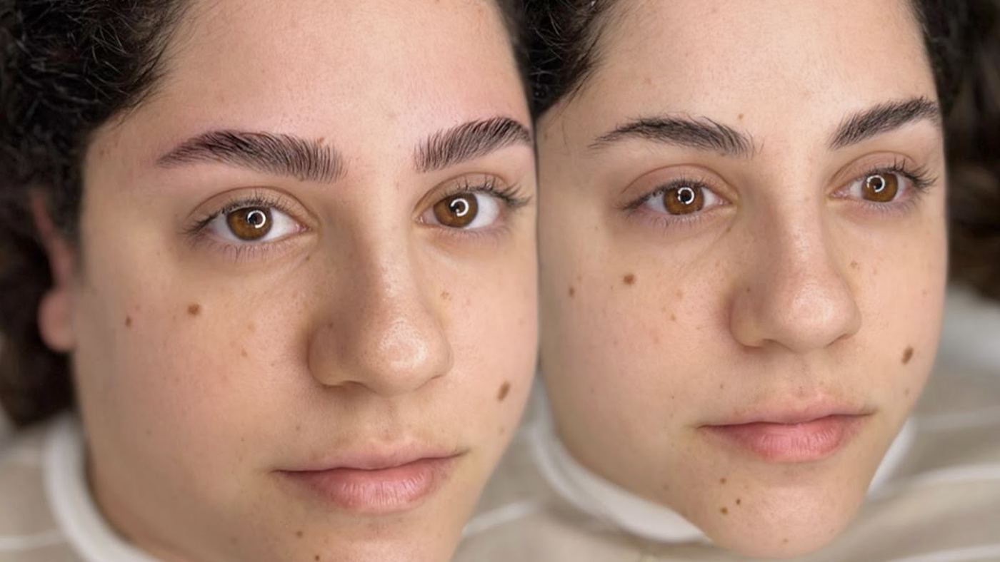
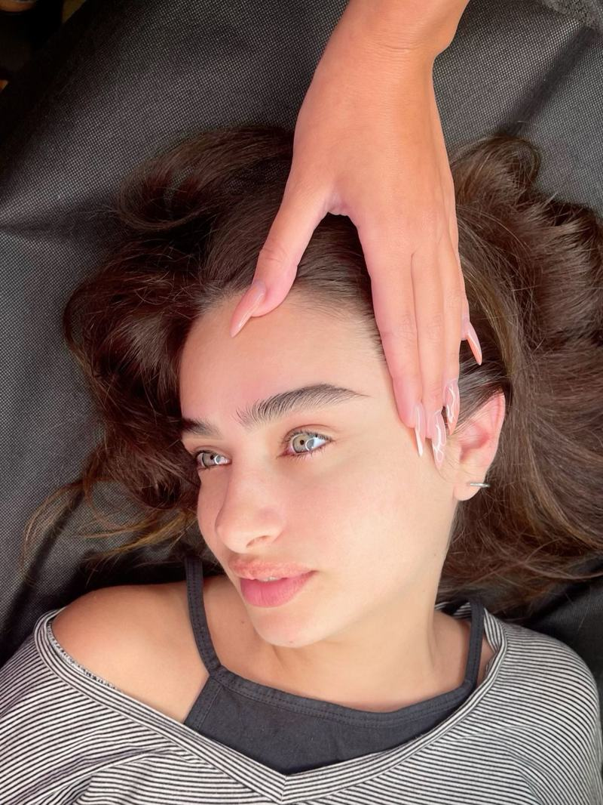
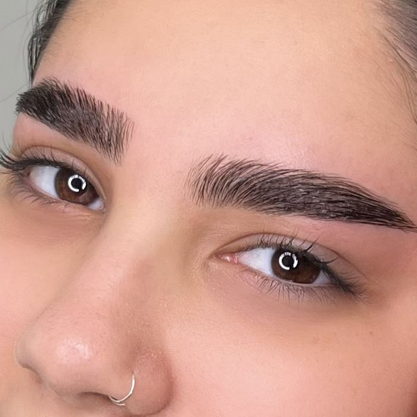

קליניקה לעיצוב גבות בחיפה.
5.0 בגוגל, 86 ביקורות.A brow design clinic in Haifa.
5.0 on Google, 86 reviews.
לירון רוםLiron Rom
קודם הפנים, אחר כך הגבה.The face first, then the brow.
קו ההתחלה עולה ישר מכנף האף.The start rises straight up from the side of the nose.
הקשת והזנב נקבעים לפי העין.The arch and the tail follow the eye.
שתי הגבות על אותו קו.Both brows on one line.
קו המראה: הזיזו ובדקו את הסימטריה.The mirror line: slide it and check the symmetry.
המחשה של מיפוי גבהBrow mapping, illustrated
עבודותWork
גבות ושפם, מהקליניקה של לירון בחיפה.Brows and upper lip, from Liron's clinic in Haifa.


״הקשיבה לבקשות שלי, ושמרה על המבנה הטבעי של הגבה.״“She listened to what I asked for, and kept the brow's natural shape.”
Irit · ביקורת בגוגלGoogle review, translated




מה כותבים על לירוןWhat people write about Liron

״לירון מהממת! מקצועית ויודעת להתאים למבנה הפנים את הגבות, עדינה ונעימה, ממליצה בחום!״“Liron is wonderful! Professional, and she knows how to match the brows to the shape of the face. Gentle and pleasant, warmly recommended!”
ניצן קן-דרור · ביקורת בגוגל, 5 כוכביםGoogle review, 5 stars, translated

״עבודה פשוט יפה ומדויקת ברמות! תמיד משקיעה בכל פרט והתוצאה יוצאת מושלמת בכל פעם. מקצועית, נעימה ומוכשרת מאוד…״“Simply beautiful, precise work! She puts care into every detail and the result comes out perfect every time. Professional, pleasant and very talented…”
רוז מנסור · 5 כוכבים5 stars, translated
״לירון מעולה, רצינית, מקצועית, מושלמת, עובדת נקי ומקצועי ומאוד משקיעה. ממליצה בחום, מספר אחת.״“Liron is excellent: serious, professional, perfect. She works cleanly and puts in real care. Warmly recommended, number one.”
Orit Gorni · 5 כוכבים5 stars, translated
לקבוע תורBook a visit
- ראשון–חמישיSun–Thu
- 9:00–19:00
- שישיFriday
- 9:00–13:00
- שבתSaturday
- סגורClosed
חיפהHaifa · 052-728-1201